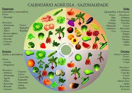
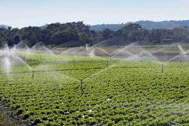

Bem-vindo!
Este site ajuda agricultores a plantar milho de forma mais eficiente e sustentável.

Épocas de plantio

Preparo do solo

Técnicas de irrigação
Este site ajuda agricultores a plantar milho de forma mais eficiente e sustentável.
Épocas de plantio
Preparo do solo
Técnicas de irrigação